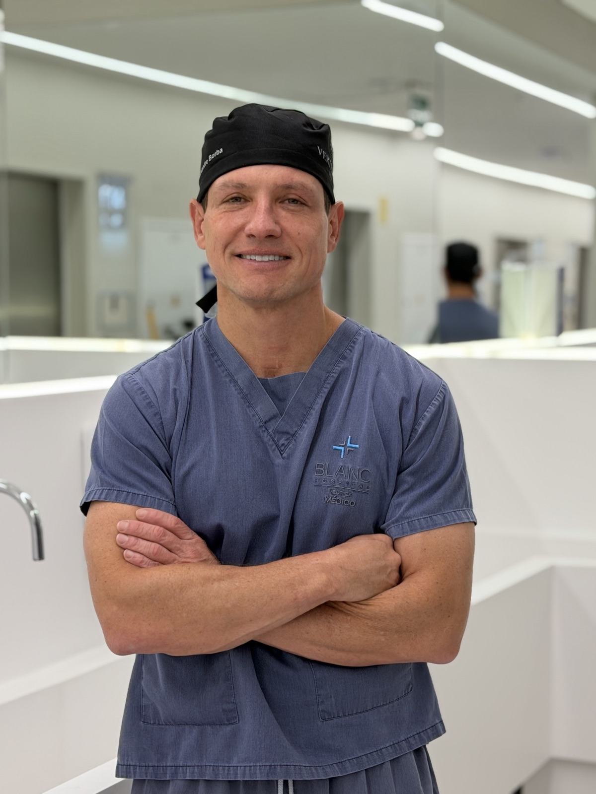
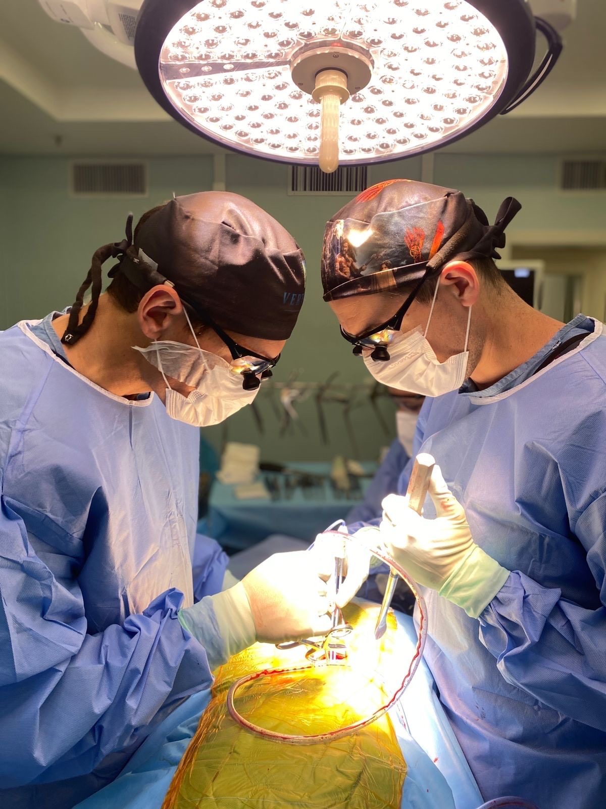
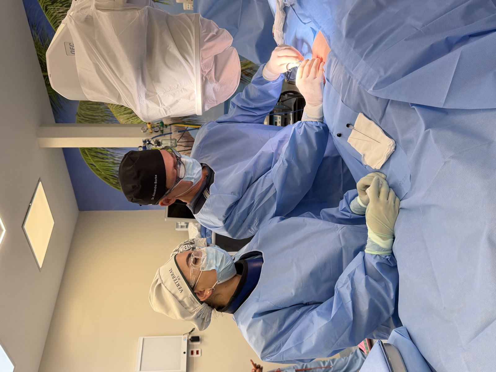
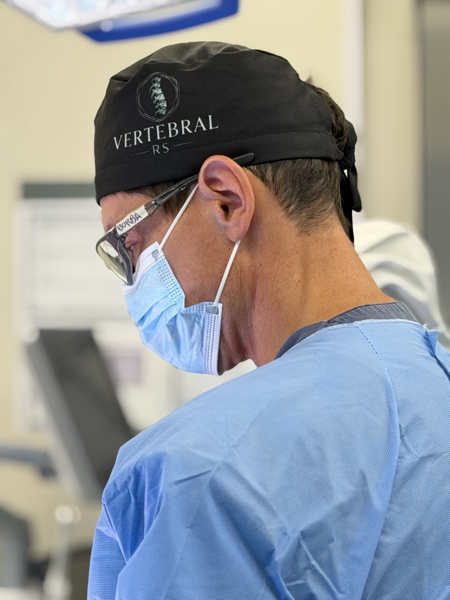
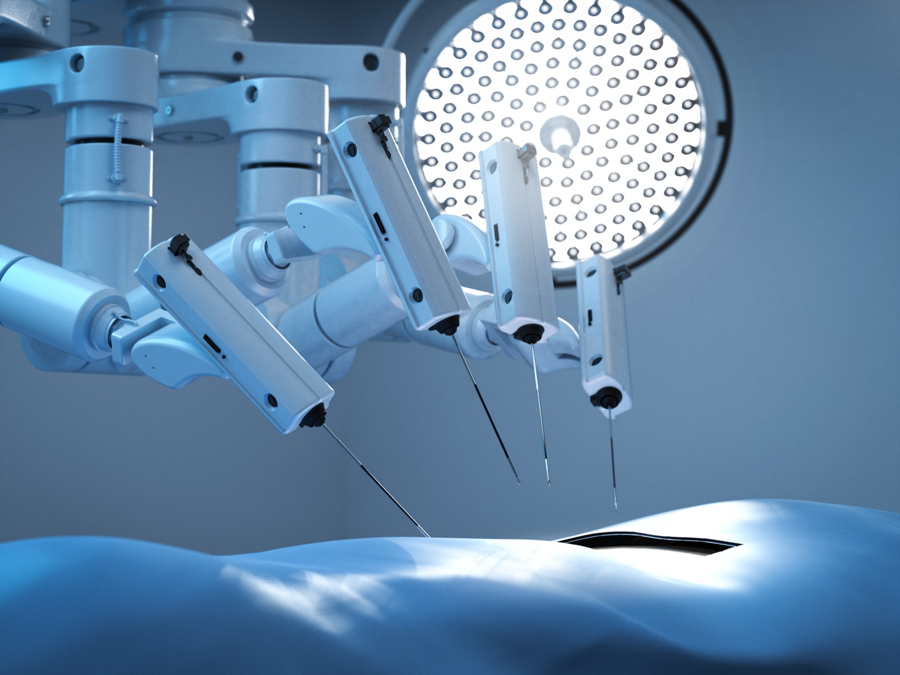
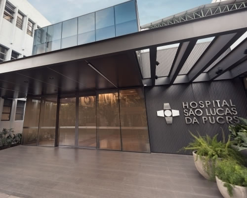
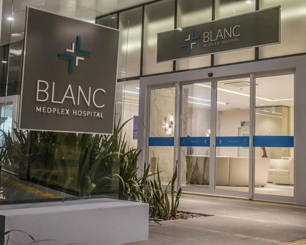

Cuidar da coluna é investir em saúde, movimento e qualidade de vida.
O Dr. Alexandre Borba trata hérnia de disco, dor ciática e outras doenças da coluna com técnicas minimamente invasivas, da medicina regenerativa à cirurgia endoscópica e robótica.
Dr. Alexandre Borba, CRM-RS 29692, RQE 20617 (Ortopedia e Traumatologia).

- Mais de 15 anos na colunaTreinamento em cirurgia da coluna vertebral pela PUCRS em 2010.
- Mestre e doutor pela PUCRSGerontologia Biomédica. Fellowship AOSpine e pós-graduação em cirurgia endoscópica pela USP.
- Três locais em Porto AlegreOrthoclinic (Centro Clínico da PUCRS), Clínica Traumato Moinhos e Urgetrauma.
Dr. Alexandre Borba
Ortopedista e traumatologista com atuação dedicada à coluna vertebral. Dê o play e conheça a trajetória dele, nas palavras dele.
- Graduação em MedicinaPUCRS
- Residência em Ortopedia e TraumatologiaHospital São Lucas da PUCRS
- Treinamento em Cirurgia da Coluna VertebralPUCRS
- Fellowship em Cirurgia da ColunaAOSpine, Hospital Cajuru (PR) e San Diego (EUA)
- Mestrado em Gerontologia BiomédicaPUCRS
- Doutorado em Gerontologia BiomédicaPUCRS
- Pós-graduação em Cirurgia Endoscópica da Coluna VertebralUSP Ribeirão Preto
Uma equipe especializada para oferecer cuidado, segurança e excelência em cada etapa do tratamento.





Da medicina regenerativa à cirurgia robótica
O tratamento começa pela opção menos invasiva que resolve o problema.
Sem cirurgia

Medicina regenerativa
PRP e proloterapia: o próprio organismo estimulando a recuperação dos tecidos.
Saiba maisBloqueio para dor
Procedimento guiado por imagem para controlar a dor e melhorar a qualidade de vida.
Saiba mais
Retorno ao esporte
Protocolo de 6 meses com proloterapia, magnetoterapia e fisioterapia para voltar a treinar com segurança.
Saiba mais
Quando a cirurgia é necessária
Cirurgia endoscópica da coluna
Hérnia de disco e compressões de nervo tratadas por uma incisão de cerca de 1 cm.
Saiba mais
Cirurgia robótica da coluna
Planejamento detalhado e alta precisão na colocação dos implantes.
Saiba mais
Doenças mais comuns


Entrevistas e vídeos sobre a coluna
Dr. Alexandre Borba no programa Viver Bem, da Rádio Guaíba
Bate-papo sobre saúde da coluna com o Dr. Alexandre Borba e o Dr. Jonatas Fernandez, com apresentação de Paula Sá. Exibido em 7 de novembro de 2026.
Assistir no YouTubeRecebeu indicação de cirurgia e ficou em dúvida?
Pedir uma segunda opinião antes de operar a coluna é comum e recomendável. Na maior parte dos casos não é urgente, e há tempo para decidir com segurança.
- Você recebeu indicação de cirurgia e quer confirmar se ela é mesmo necessária.
- Foi indicada uma cirurgia aberta ou uma artrodese e você quer saber se existe alternativa menos invasiva.
- Dois médicos deram orientações diferentes.
- Você já operou a coluna e a dor continuou ou voltou.
- Você quer entender melhor os riscos e a recuperação antes de decidir.
O que levar na consulta
- Ressonância magnética da coluna, com as imagens e o laudo.
- Radiografias e tomografias, se tiver.
- Relatórios ou laudos de médicos que já avaliaram o caso.
- Lista das medicações em uso e dos tratamentos já feitos, como fisioterapia e bloqueios.
- Em caso de cirurgia anterior, a descrição cirúrgica.
O Dr. Alexandre analisa as imagens dos exames, não só os laudos, e explica as opções para o seu caso, cirúrgicas ou não. A decisão final é sempre sua.
Hospitais onde opera
As cirurgias são realizadas em hospitais de Porto Alegre com estrutura para procedimentos de coluna.
Hospital Moinhos de Vento
Hospital Mãe de Deus

Hospital São Lucas da PUCRS
Hospital Divina Providência

Blanc Hospital
Precisão no diagnóstico.
Estratégia no tratamento.
Cuidado em cada etapa.
Agende sua consulta com o Dr. Alexandre Borba
Leve seus exames. Você sai da consulta sabendo a causa da dor e quais são as opções para o seu caso.